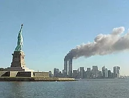

History
On September 11, 2001, The Twin Towers of the World Trade Center and The Pentagon were attacked by four aircrafts by the terrorist group al-Qaeda, killing 3,000 people and injured over 6,000 others.
Conspiracy
Years later, many conspiracies have made ground. Here’s some of the theories:
1. Inside Traders knew about the attack before they happened.
Right before the September 11th attacks, some fishy things happened within the stock market and insurance firms. United Airlines and American Airlines, the same airlines that were hijacked during the attacks, had their stocks skyrocket. Many think the traders were tipped off about the attacks and profited from the tragedy. There was soon an investigation in which Osama bin Laden was a suspect.
2.Air Defenses were told to ‘Stand Down’.
The North American Aerospace Defense Command(NORAD) is a government organization that would be able to send out fighter jets incase of a plane hijack. On 9/11, their was a lack of presence during the attacks, so many believe that the NORAD generals were told to “Stand Down”.
3.Planes didn’t make Twin Towers collapse, bombs did.
Many believe that the towers were blown down with explosives placed in selected locations. Some witnesses recounted hearing explosions inside the building as they were trying to escape. Many architects and scientists have also said that a plane cannot produce enough heat to melt steel frames of the buildings that collapsed.
4.Aluminum planes can’t penetrate steel structure of the World Trade Center.
Commercial airplanes’ frames are made with a very light aluminum material in order to make it easier to fly. Theorists believe there is no possible way an airplane can do the damage it did to the Twin Towers.
5.Flight 93 was completely staged.
The fourth hijacked plane, Flight 93, crashed in shanksville, Penn, but it is believed that the passengers fought back and crashed the plane into a field. Skeptics believe the plane landed safely while another substitute plane was sent out. Others believe the passengers were murdered or relocated and will never be found.
6.Cell phone calls made from the planes were fake.
Calls from cell phones could not receive reception from the altitude at which planes usually fly, so many believe the calls were fake. Others also questioned a phone call from a son to his mother, in which he referred to himself by his first AND last name.
7.Jewish people knew the attack was going to happen and took off work on september 11th.
Theorists noticed that 4,000 jewish employees took off from work on september 11th. Some of the first people to record the attacks were also jewish.
8.The Bin Laden tapes are fake.
At first Osama bin Laden denied any involvement with the attacks, but soon after, numerous tapes came out claiming he changed his mind and took full responsibility.